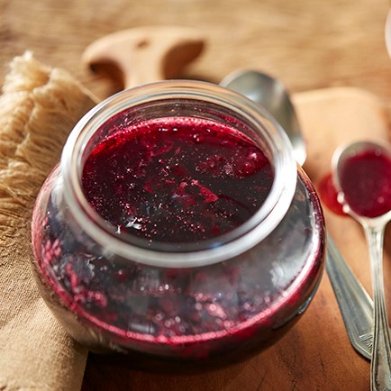
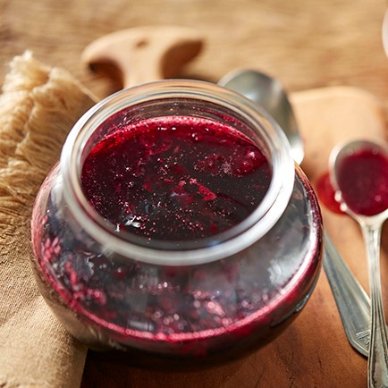
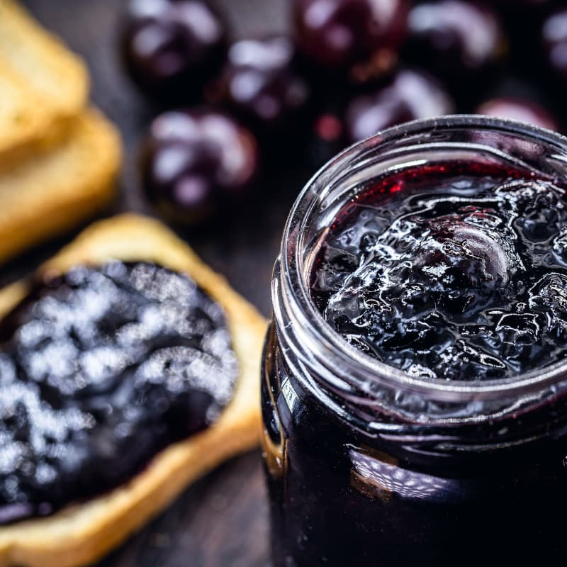
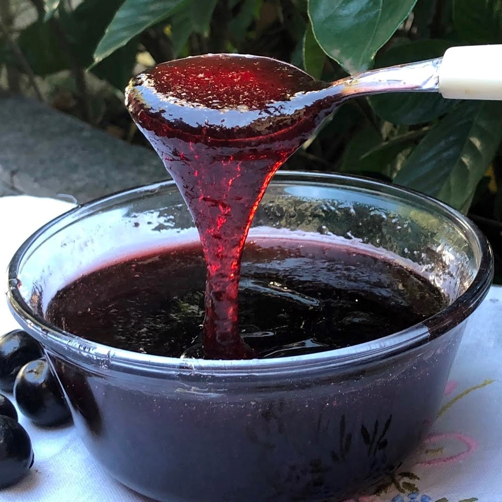

Ingredientes
- 1 kg de jabuticaba
- 1 litro de água
- 1 xícara (chá) de açúcar cristal
Modo de Preparo
- Numa tigela, lave as jabuticabas sob água corrente.
- Transfira as jabuticabas para uma panela grande, cubra com a água e leve ao fogo alto. Quando ferver, diminua o fogo para médio e conte 15 minutos, mexendo de vez em quando, até a água adquirir a coloração roxa e as jabuticabas murcharem e estourarem – durante esse período, retire a espuma que se formar na superfície com uma colher. Peinere a jabuticaba cozida para extrair toda a polpa e líquido do cozimento.Coloque um pires no congelador — ele vai ser usado para verificar o ponto da geleia.
- Volte o líquido do cozimento para a panela e adicione o açúcar. Misture ao fogo alto. Assim que ferver, diminua o fogo para médio e cozinhe por cerca de 50 minutos, até o líquido começar a espumar e mudar de coloração. Depois que espumar, conte 1 minuto. Mergulhe uma colher dentro da panela, a geleia deve cobrir as costas da colher, formando uma camada bem brilhante, no ponto napê.
- Caso tenha um termômetro, a geleia deve atingir a temperatura de 100 ºC.
- Transfira a geleia ainda quente para um pote de vidro e espere esfriar antes de levar para a geladeira. Sirva fria com queijos, pães, bolos, crepes.
GELEIA DE JABUTICABA
Essa geleia é um clássico das casas brasileiras. Pode estar na mesa do café da manhã, para passar no pão, mas também faz bonito no happy hour, com queijos, ou como sobremesa, com crepe.
 

Você sabia que: É uma fruta originária da Mata Atlântica, e tem raízes totalmente brasileiras. Sendo assim, seu nome vem do tupi.

